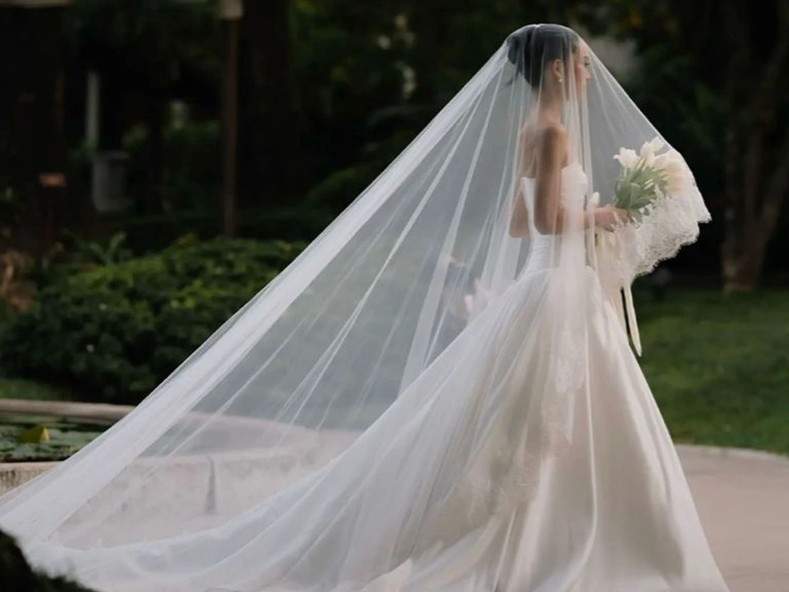
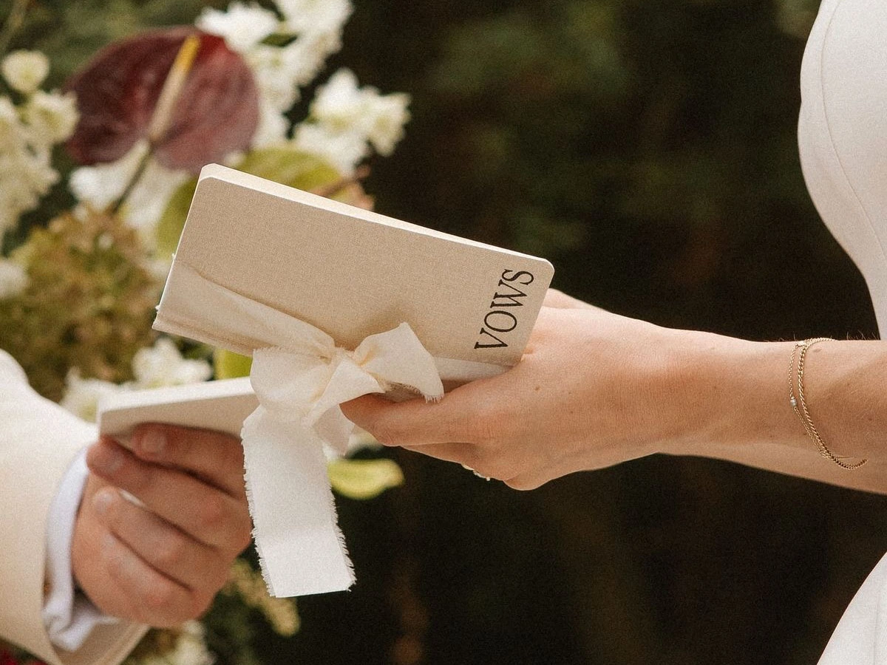
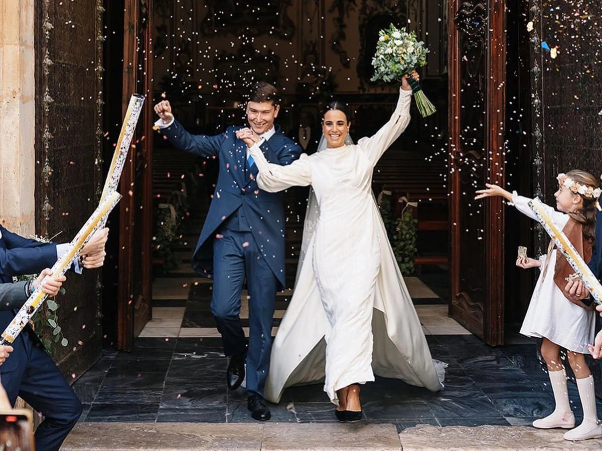

La entrada
La primera nota marca el tono emocional del recuerdo. Elegimos una pieza que represente el inicio de su historia frente a todos.
Marca premium de lujo emocional
El violín de Ceci crea experiencias musicales para bodas donde la emoción, la estética y la memoria trabajan juntas. No es solo música. Es la forma en que una historia se vuelve inolvidable.

Qué es El violín de Ceci
El violín de Ceci no funciona como un proveedor musical tradicional. Cada boda se trabaja como una pieza viva, donde la música acompaña la emoción precisa de cada instante.
La propuesta combina arte, sensibilidad, estrategia y diseño de experiencia para transformar la ceremonia en un recuerdo permanente.
La experiencia musical
La boda se diseña por escenas. Cada escena necesita una intención, una atmósfera y una emoción precisa.
La primera nota marca el tono emocional del recuerdo. Elegimos una pieza que represente el inicio de su historia frente a todos.
Hay momentos donde la música no invade: sostiene. Diseñamos transiciones sensibles para que todo se sienta natural y elegante.
El cierre no solo acompaña. Eleva. La experiencia termina con una energía que deja a los invitados emocionalmente dentro de la escena.
Formatos musicales
Cada formato responde al estilo visual y emocional de la boda. No se elige por cantidad, sino por intención.
Una presencia delicada, elegante y emocional. Ideal para ceremonias íntimas, atmósferas románticas y espacios donde menos realmente significa más.
Más profundidad, más cuerpo y una elegancia sonora que transforma la ceremonia en una experiencia envolvente.
La experiencia más completa. El piano de cola suma presencia visual y convierte el espacio en una escena editorial, sofisticada y memorable.
Test para novios
El test identifica el perfil de la pareja, la intensidad musical ideal y el tipo de experiencia que mejor acompaña su historia.

Sobre Ceci
Cecilia Lezcano comenzó su formación musical desde la infancia. Con el tiempo entendió que, en una boda, la música no solo acompaña: amplifica la emoción de los momentos que se van a recordar toda la vida.
Por eso su trabajo une formación artística, curaduría musical y una mirada estratégica sobre la experiencia completa de la pareja y sus invitados.
“No se trata de tocar durante una boda. Se trata de diseñar cómo se va a sentir ese recuerdo.”
Momentos reales
Una selección de escenas reales donde la música, la emoción y la estética se encontraron en el momento justo.
 Ceremonia al aire libre
Ceremonia al aire libre

Entrada de la novia Dúo con piano
Dúo con piano
 Detalle editorial
Detalle editorial

Votos y silencios
Salida de la ceremoniaTestimonios
Dejé conectada tu página de reseñas para que puedas sumarlas cuando quieras.
“La música convirtió nuestra ceremonia en un momento mágico. No era solo música: era emoción pura.”
Laura & Andrés“Desde la primera reunión entendimos que Ceci no solo tocaba el violín. Diseñó la experiencia completa.”
Sofía & Martín“El momento de la entrada fue simplemente inolvidable. Se sintió elegante, íntimo y profundamente nuestro.”
Mariana & FelipeSiguiente paso
Cada boda empieza con una conversación. Y cada experiencia musical empieza por entender su historia, su estética y la emoción que quieren recordar.